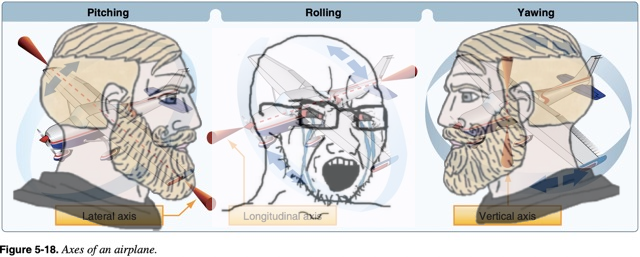
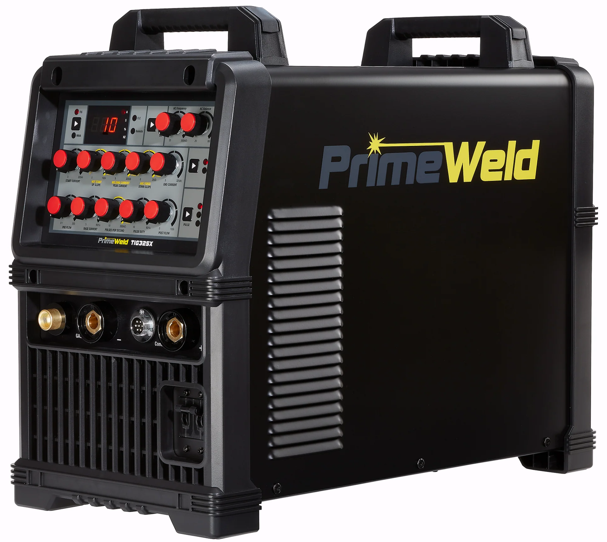

Vann Wellmon
Ultralight Project - Trudging Along
My last update for this project was ~two months ago, and I figured it was time for the void to get a brief update on things. Fundamentally, I’ve been grappling with the transition point from my 1-D sizing analysis to detailed design work. Unsurprisingly, it’s been a very difficult thing to pin down and an easy part of the process to procrastinate on.
Complaining aside, I have spent a decent amount of time considering next steps and running design trades. I’d like to share some of those core decisions, why I made them, and how they impact the rest of the project.
Decisions Made
I ended my last post—and my last serious block of effort—by calculating a thrust requirement for the ultralight. These values were internally consistent across different approaches, as well as with comparable values I could find online. I had started a BLDC design process, but I quit for a few reasons. Firstly, I was doing the BLDC in-house since I thought I wouldn’t be able to make significant frame or wing progress given my apartment size, but I took some measurements and realized I could wheel everything out.
The biggest problem I encountered, however, was an under-constrained design space. I didn’t have a prop, I didn’t have a battery, etc. I “fixed” this problem by deciding to copy a motor I found online. After about two days of reading BLDC design textbooks and going through some initial sizing, I finally realized how absurd it was to make a shittier, more expensive version of this motor when I could just buy it and save myself a few months. I also plan to build the pack myself, which I think is plenty of propulsion scope for this project. (As an aside: I really want to get into BLDC motor and controller design at some point—now is a bad time.)
Another early decision I’m rolling back is the control scheme. Long ago, I was planning to go with two-axis control (rudder and elevator only) to save weight and complexity, and to allow for easier trailerability. A few months back, I decided to add ailerons for better handling, particularly during landing since my pad is very narrow. While I think it’s well-advised to have ailerons on an aircraft, the complexity they bring to this project is just not what I’m looking for.

It’s important, when making a bad choice, to be clear about why you’re making that choice. For me, this ultralight is going to fly 1–2 times and then be retired. The hard requirements amount to: take off, don’t be illegal (at least visibly), and don’t die. I’m confident I can satisfy these with two-axis control.
Lastly, I’ve made some semi-final decisions (as with all personal projects) on the structures—in particular, the wing, frame, and empennage design. These will all probably get their own posts as I fabricate them (including fabricated, backdated analysis).
Current Motion
These are exciting times in the workshop/living room! I’ve finally bought a TIG welder so I can fabricate the frame. That said, I’m extremely new to TIG and want to practice as well as take a class. That should give me time in the interim to design the frame and the rest of the primary and secondary structure (not sure if this is airplane terminology, but it is my terminology).


A Personal Aside
To be honest, I’ve really been struggling to stay motivated, especially through March and April (to which this post is backdated for sanity reasons). My job just raised a Series A, but the demos and hours required really drained me. I also took up climbing (thank you, Caroline, if you ever read this), which has been fantastic and wonderful—both the physical and social aspects.The long hours, new hobby, and a personal project that effectively mimics my day-to-day can be demotivating. I’ve found myself tempted to quit, or even worse, start a new project. I think distraction is one of the most killer coping mechanisms for personal engineering projects. It is so easy to fall into the comfort of something new and exciting, but you eventually find that it too has pitfalls, challenges, and the ultimate point of failure: you.
I watched a really great video by Joe Barnard recently on this topic. His central point was that our ultimate requirement as weekend warriors is to finish the project. Everything else is secondary to getting something—anything—across the line. I found that extremely motivating. As a young engineer, I think it’s easy and tempting to fall into analysis paralysis in the face of many of these problems. I believe we’d all prefer to spend a bit of time fixing rash decisions we made in the shop versus spending that same time at the computer with work’s Ansys booted up. For better or worse, I plan to finish.
Somewhat separately, I read some excerpts from Either/Or, and it forced a moment of reflection. I had two relationships end in the fall of last year, and it woke me up to the fact that my life outside of work was empty. That emptiness made me see a “full life” as the end goal—a life filled with friends, hobbies, relationships, trips, etc. That reading, however, sparked a different perspective: one that rewards immense focus on very few things. I don’t think this is ever something I’d consciously decide, but I’m starting to build a life out here, and I’m not sure which direction I want to go just yet.